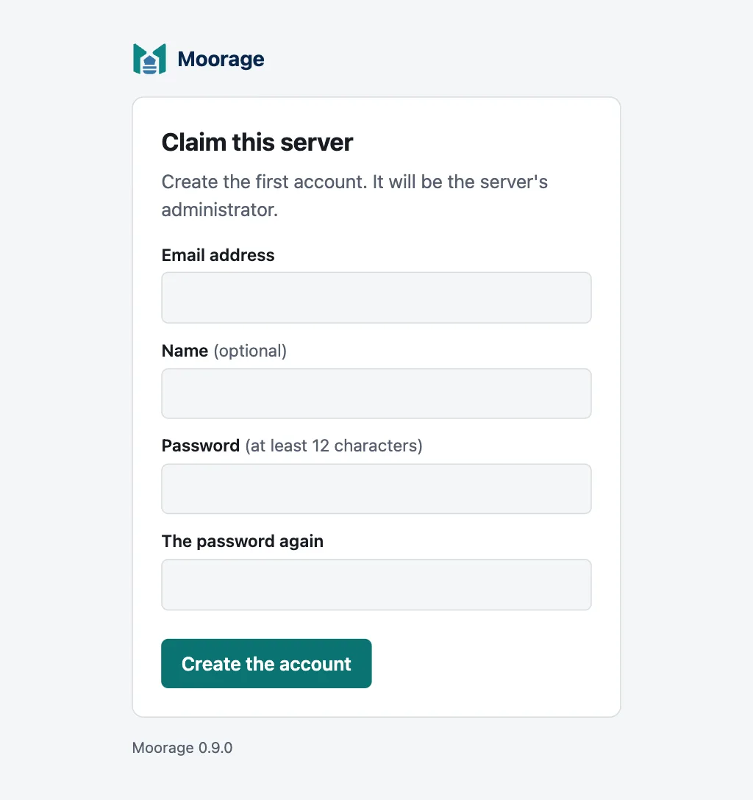
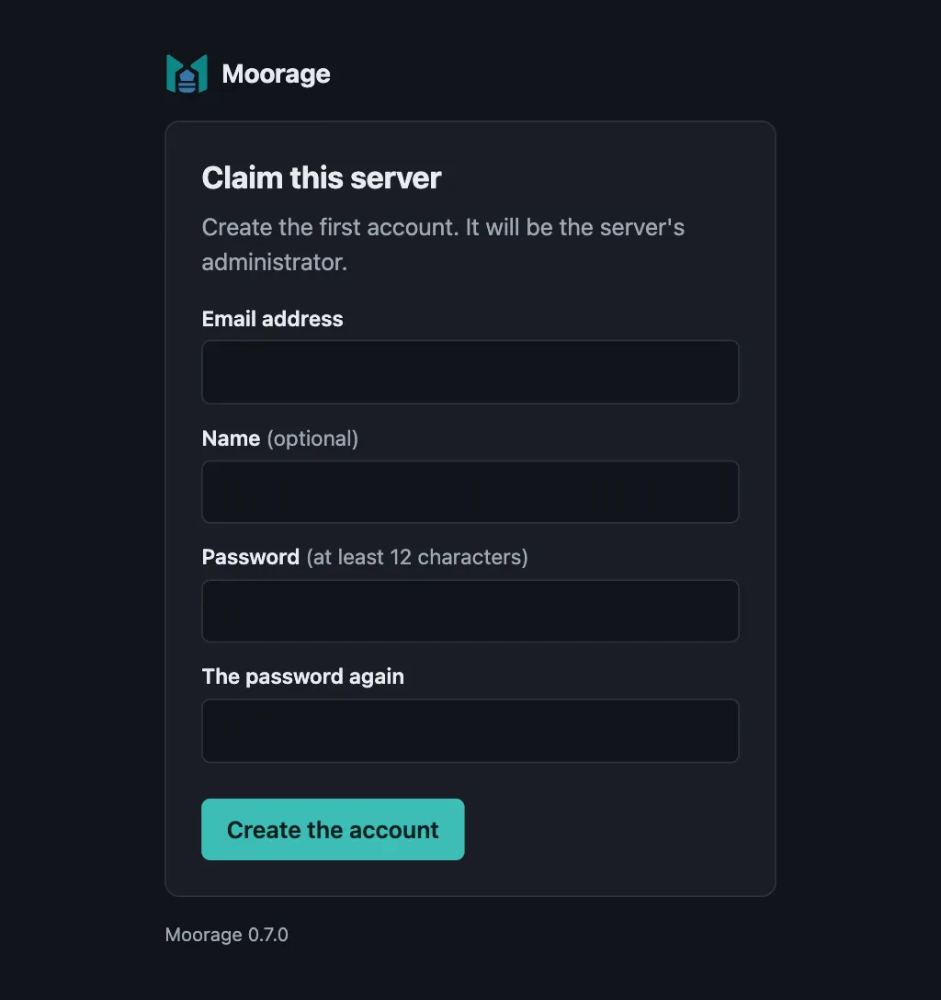

Installing Moorage
Get moor, configure the server, run it as a service, and claim it.
On this page
Moorage is one program, moor: the server and the command line that talks to it. It runs on Linux, macOS and Windows, on amd64 and arm64. How big a machine says how much it needs.
It needs no database, proxy or container engine. Builds download the Go, Node.js, uv and Python that an app asks for, from their official places or mirrors of your own. Beyond that:
- Git, on the machines that you push from, to deploy with
git push.moor deploydoes without it. - Podman or Docker, on a server that runs apps in containers or services, such as a database. Nothing else asks for one, and a server with none says so when something does.
- systemd, on Linux, to run it as a service. macOS and Windows have what that takes.
1. Get moor#
On macOS or Linux:
curl --proto '=https' --tlsv1.2 -fsSL https://raw.githubusercontent.com/robert-mcdermott/moorage/main/install.sh | shIn PowerShell on Windows 11:
irm https://raw.githubusercontent.com/robert-mcdermott/moorage/main/install.ps1 | iexEach picks the file for your computer from the latest release and downloads it with the release's SHA256SUMS. It requires exactly one matching checksum, runs the downloaded program's version check, and only then puts it in place, so a failed download never replaces a working copy. It needs no administrator rights, and starts nothing.
| Installs to | PATH | |
|---|---|---|
| macOS, Linux | ~/.local/bin/moor | Left alone: it says what to add, if it is not there |
| macOS, Linux, as root | /usr/local/bin/moor | Left alone |
| Windows | %LocalAppData%\Programs\Moorage\moor.exe | Added to your user PATH: open a new terminal to use it |
For a server that will run as a system service, install as root, so that the service does not run from someone's home directory. Download and read the script first; never pipe a download straight into sudo:
curl --proto '=https' --tlsv1.2 -fsSLo install-moor.sh https://raw.githubusercontent.com/robert-mcdermott/moorage/main/install.shless install-moor.shsudo sh install-moor.shTo choose a release or a directory, set these (MOOR_NO_PATH_UPDATE and MOOR_ARCH are for Windows only):
| Variable | install.sh | install.ps1 | |
|---|---|---|---|
MOOR_VERSION | --version | -Version | A release, such as v0.10.1. By default, the latest |
MOOR_INSTALL_DIR | --install-dir | -InstallDir | An absolute directory |
MOOR_REPOSITORY | -Repository | owner/repository, for a fork | |
MOOR_ARCH | -Architecture | amd64 or arm64, if detecting it fails | |
MOOR_NO_PATH_UPDATE | -NoPathUpdate | Leave the user PATH alone |
curl --proto '=https' --tlsv1.2 -fsSL https://raw.githubusercontent.com/robert-mcdermott/moorage/main/install.sh | MOOR_VERSION=v0.10.1 sh$env:MOOR_VERSION = 'v0.10.1'; irm https://raw.githubusercontent.com/robert-mcdermott/moorage/main/install.ps1 | iexOn Windows, irm … | iex reads the script into memory and runs it, so the PowerShell execution policy, which governs script files, does not apply. To read it first, or for a saved copy:
Invoke-WebRequest -UseBasicParsing https://raw.githubusercontent.com/robert-mcdermott/moorage/main/install.ps1 -OutFile install-moor.ps1Get-Content install-moor.ps1powershell -ExecutionPolicy Bypass -File .\install-moor.ps1By hand#
Download the file for your system from the releases page, check it against SHA256SUMS, and put it on your PATH:
curl -fLO https://github.com/robert-mcdermott/moorage/releases/latest/download/moor-linux-amd64curl -fLO https://github.com/robert-mcdermott/moorage/releases/latest/download/SHA256SUMSsha256sum --check --ignore-missing SHA256SUMSsudo install -m 0755 moor-linux-amd64 /usr/local/bin/moor(On Linux on ARM, use moor-linux-arm64. On macOS, use moor-darwin-arm64 or moor-darwin-amd64, and shasum -a 256 --check --ignore-missing SHA256SUMS. On Windows, use moor-windows-amd64.exe or moor-windows-arm64.exe, compare Get-FileHash with SHA256SUMS, and name it moor.exe, in a directory on your PATH.)
The checksum shows a damaged download, and a file that differs from the release's list. Both come from the same release, so it cannot protect against someone able to replace both.
Moorage's programs are not signed with an Apple or Microsoft certificate. The commands above download without a browser, so the system does not flag the file. If you save it with a browser, macOS or Windows SmartScreen asks for confirmation the first time it runs: on macOS, remove the flag with xattr -d com.apple.quarantine ./moor-darwin-arm64, and on Windows, with Unblock-File .\moor-windows-amd64.exe.
From source#
Build it with Go 1.26 or newer:
git clone https://github.com/robert-mcdermott/mooragecd moorageCGO_ENABLED=0 go build -trimpath -o moor ./cmd/moormoor version prints the version you have.
2. Configure the server#
moor server init writes server.toml, the server's configuration, from a preset. Run it as root for a server that starts with the machine (the file goes to /etc/moorage/server.toml on Linux, /Library/Application Support/Moorage/server.toml on macOS), in an elevated terminal on Windows for the same (%ProgramData%\Moorage\server.toml), or as yourself to try Moorage on your own computer: everything then goes in one folder, ~/.moorage, on macOS and Linux, and in %LocalAppData%\Moorage on Windows. XDG_CONFIG_HOME and XDG_DATA_HOME win on Linux, if they are set.
A server set up as yourself by an earlier version stays where it is, and moor finds it. To move one, stop it, move the folder, change data_dir in server.toml, and start it again. A service names where its server.toml was, so that one takes moor server install from the new place.
On your own computer — apps at http://<app>.localhost:8080:
moor server init --preset localChromium- and Firefox-based browsers resolve *.localhost names on their own. Where the rest of your computer does not, for Safari and command-line tools, moor server resolver install sets that up. Or, for curl and other tools, send the app's name as the Host header (curl -H 'Host: hello.localhost' http://127.0.0.1:8080/).
A server on your network — apps at https://<app>.<domain>, with certificates from Moorage's own certificate authority:
sudo moor server init --domain apps.example.comPoint a wildcard DNS record, *.apps.example.com, at the server, and open ports 80, 443 and 2222. With no wildcard record to be had, --routing path puts apps at <domain>/<app>. Browsers trust the certificates once they trust Moorage's CA, which every app serves at /.moorage/ca.crt, and moor trust installs (TLS and trusting the server). To use your own certificates — a corporate wildcard, for instance — set tls.mode = "files" and list them under [[tls.certificates]]; an intermediate CA from your corporate CA can issue certificates instead (tls.ca_cert, tls.ca_key).
A server on the internet — apps at https://<app>.<domain>, with certificates from a public CA, and everything but production behind a sign-in:
sudo moor server init --preset public --domain apps.example.com --email ops@example.com --agree-termsPoint a wildcard DNS record at the server, and open ports 80, 443 and 2222. See From a public CA, with ACME, and read Security first: Moorage has not yet had an outside security review.
Behind a TLS proxy such as nginx — Moorage serves plain HTTP on 127.0.0.1:8080 and your proxy terminates TLS:
sudo moor server init --domain apps.example.com --behind-proxyThe proxy must keep the Host header, pass WebSocket upgrades, not buffer responses, and allow long requests and large uploads. moor server proxy-config nginx writes a configuration for nginx: see Behind a TLS proxy.
Every setting is explained in the file itself; moor server run checks it strictly and names the line of every problem. moor server doctor checks the rest, at any time, and says how to fix what it finds (When something is wrong).
3. Run it as a service#
sudo moor server installThis installs and starts a systemd unit (/etc/systemd/system/moorage.service) on Linux or a launchd daemon (/Library/LaunchDaemons/io.moorage.server.plist) on macOS, which starts with the machine.
Run it without sudo to install a service of your own user instead, which starts when you log in (~/.config/systemd/user/moorage.service on Linux, where loginctl enable-linger keeps it running after you log out, and ~/Library/LaunchAgents/io.moorage.server.plist on macOS). Then leave out the sudo below as well.
The service runs moor from where it was when you installed it, with the PATH you had then — apps see that PATH too. Reinstall after moving moor or to change the PATH.
On Windows, run this in an elevated terminal, as an administrator, leaving out the sudo here and below:
moor server installThat makes a Windows service called Moorage, which starts with the computer. It runs as an account of its own, NT SERVICE\Moorage, with few rights, and so do your apps, rather than as the system. That account, the system and administrators are the only ones who can get at the data directory. A moor in your own profile, where the installer puts it, is one the service could not read, so that a copy goes in %ProgramFiles%\Moorage: use that one for moor server upgrade. A container engine is usually for one person, so that an app in a container needs an engine that this account can reach.
sudo moor server statussudo moor server restart| Command | What it does |
|---|---|
moor server status | Says whether the service runs and answers, where its configuration and logs are, and the link to claim it until someone has |
moor server start | Starts the service |
moor server restart | Restarts the service |
moor server stop | Stops the server, as a service or as started with moor server run. It stays stopped until you start it, or the machine or your next login does |
moor server stop --all | Stops the apps and services too, which keep what they hold. The server starts them again when it starts |
moor server uninstall | Removes the service, and stops the apps and services. It leaves the configuration, the data and what services hold in place |
Apps and services keep running while the server stops or restarts: each app runs under a small supervisor of its own, and the server takes them over when it starts again. Requests to apps are refused until it is back, so that a site can look down while a stopped server leaves its app running.
The server's log is in the journal on Linux (journalctl -u moorage.service -f, and with --user for a service of your own) and in logs/server/moorage.log in the data directory on every system.
On Windows, a program has to have the extension it runs by: a go build -o bin/server.exe . in your manifest, and command = "bin/server.exe".
To run the server in the foreground instead, for a try:
moor server run4. Claim it#
moor server init printed a one-time setup link (moor server status shows it again, with sudo for a system service). Open it and create the first account, the server's administrator. On your own computer you can skip this: the command line needs no account there.


5. Deploy#
On the server's machine, the command line finds the server and its admin token by itself, when run as the user that runs the server (with sudo for a system service). From another machine, sign in:
moor login https://moorage.apps.example.comThat opens your browser to approve the sign-in; with Moorage's own CA, also pass its certificate (--ca-cert ca.crt). moor server users create adds other people (Accounts and access).
Then deploy an app from its source directory:
moor deploy --app helloOr push it with git, over SSH (port 2222, listen.ssh in server.toml) or HTTPS: register your SSH key once with moor keys add, add the app's remote with moor git remote, and git push moorage main (Deploying with git push). Open port 2222 in the firewall, beside 80 and 443, for pushes from other machines.
The quick starts show each kind of app: Go, Python, Node.js, static sites and anything else. Variables and secrets configure apps.